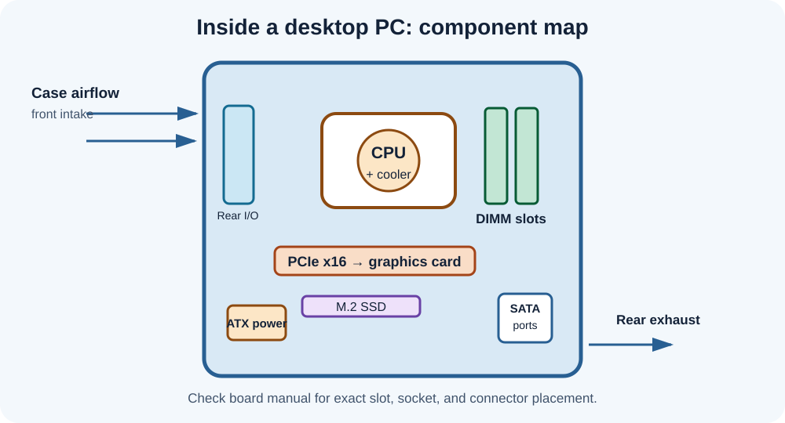
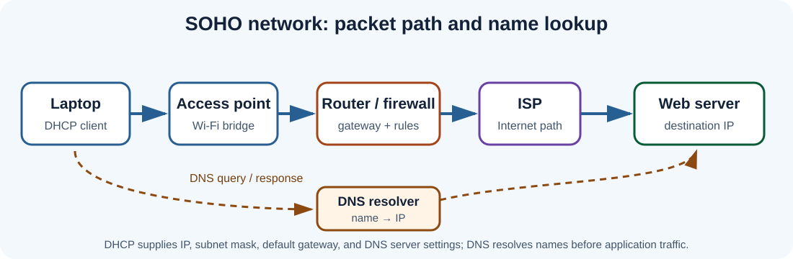
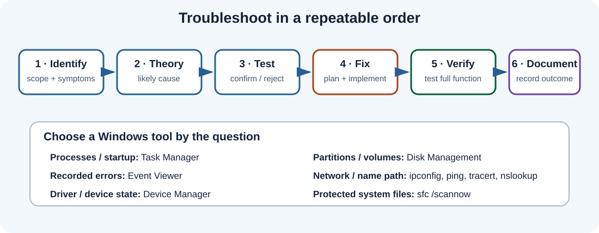
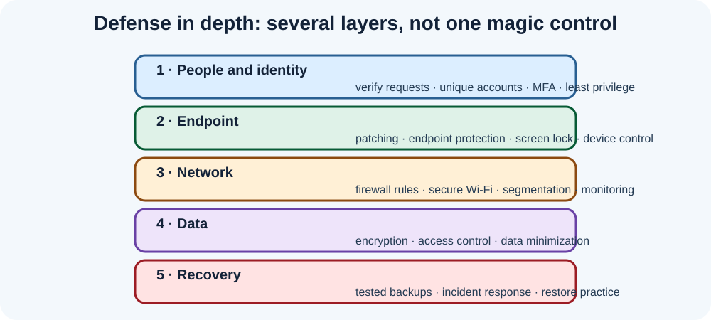

Clear, original notes, free video lessons, and practice checks for the current A+ V15 exams: 220-1201 and 220-1202. Use CompTIA’s official objectives as the final checklist. Source [1]
Version check: Core 1 and Core 2 must be from the same exam series. Confirm your exam code before studying. This guide is an independent aid, not endorsed by CompTIA or Professor Messer.
A practical study loop
Map: download the official objectives and mark each item “know / review / learn.”
Learn: read one topic below, then watch the matching free lesson in Professor Messer’s course index.
Recall: close your notes and explain the idea aloud; draw a diagram or list troubleshooting steps from memory.
Apply: do a small lab or scenario. Explain why each wrong answer is wrong.
Review: revisit missed objectives after a day and again later in the week.
CompTIA lists up to 90 questions per exam, a 90-minute limit, multiple-choice and performance-based formats, and separate passing scores for the two cores. Check the official page for changes before booking. Source [1]
Core 1 · 220-1201
Core 1 emphasizes devices, networking, hardware, cloud/virtualization, and hardware/network troubleshooting. The percentages below follow the current official summary. Source [1]

PC component map: practice naming each part, its role, and what must match during replacement.

Network path: use this to reason through address assignment, gateway routing, DNS resolution, and application connectivity.
Extra Core 1 notes · connectors, memory, and storage
Fast hardware comparisons
Item
Know this
Check before service
DDR4 vs DDR5
Different signaling, notch/keying, and board support.
CPU + motherboard support; do not force a module.
SATA vs NVMe
SATA is a storage interface; NVMe uses PCIe for low-latency access.
M.2 is a form factor; verify protocol, keying, and slot support.
DIMM vs SO-DIMM
Desktop vs smaller laptop memory module formats.
Generation, capacity, speed, rank, and supported slots.
USB-C
Reversible connector shape; capabilities vary by device/cable.
Data rate, power delivery, and display support separately.
HDMI / DisplayPort
Digital display links; both may carry audio.
Resolution, refresh rate, cable capability, and input selection.
Never open a power-supply enclosure or CRT. Disconnect power, use ESD precautions, and verify compatibility against the system documentation. iFixit’s free repair guides add photo-based practice; follow device-specific safety steps. Source [8]
Extra Core 1 notes · wireless and troubleshooting clues
2.4 GHz: longer reach and better obstacle penetration, but more interference and fewer non-overlapping channels.
5 GHz: more channels and throughput at shorter range; walls reduce signal more than at 2.4 GHz.
6 GHz: additional spectrum for supported Wi-Fi 6E/7 devices; both client and AP must support it.
Latency vs throughput: latency is delay; throughput is useful data rate; jitter is variation in delay; packet loss is missing traffic.
Intermittent Wi-Fi: compare distance, band, channel congestion, roaming, driver state, and whether wired clients are affected.
Slow disk: inspect free space, activity, health/S.M.A.R.T. indicators, cables, and background load before replacing it.
Mini-lab: Use Cisco Packet Tracer’s free Getting Started course to build a small LAN; label the switch, AP, gateway, DHCP service, and DNS service. Then break one setting and trace the symptom. Source [7]
Core 1 flashcards · open to reveal
What does a default gateway do?
Forwards traffic from the local network to destinations outside its subnet.
What does an APIPA address suggest?
The device did not obtain a DHCP lease; inspect link, VLAN, DHCP scope/service, and relay path.
Which RAID levels in this guide provide mirroring?
RAID 1 mirrors; RAID 10 combines mirrored pairs with striping. Neither replaces an independent backup.
What is the purpose of thermal paste?
It fills microscopic gaps between a processor heat spreader and heatsink to improve heat transfer.
What should you check before installing a CPU?
Socket/chipset support, BIOS compatibility, cooler requirements, and careful alignment—never force it.
Which printer uses a fuser?
A laser printer; the fuser uses heat and pressure to bond toner to the page.
1 · Mobile devices — 13%
Laptop service: identify the correct replacement part and service procedure; disconnect power and battery before internal work. ESD protection matters.
Storage and memory: compare 2.5-inch SATA SSDs with M.2 SATA/NVMe drives; check form factor, interface, and supported keying. Laptop memory commonly uses SO-DIMMs.
Connections: pair Bluetooth peripherals; NFC works at very short range; tethering shares a phone’s data connection. A docking station adds ports and may charge the laptop.
Management: MDM applies organization policies and remote actions. Know BYOD, COPE, and data synchronization trade-offs.
Recall prompt: A laptop sees Wi-Fi but cannot reach the Internet. Name three checks before replacing hardware.
2 · Networking — 23%
Addressing: IPv4 uses a 32-bit address; IPv6 uses 128 bits. DHCP assigns addresses and options; DNS resolves names to records such as A/AAAA and MX.
TCP vs UDP: TCP provides ordered, acknowledged delivery; UDP has lower overhead and no delivery guarantee. Choose based on application needs.
Network gear: switches forward frames within a LAN; routers move packets between networks; APs bridge wireless clients; firewalls enforce traffic rules; modems/ONTs terminate ISP links.
Wireless: 2.4 GHz tends to travel farther and is more congested; 5/6 GHz offer more capacity at shorter range. Use modern WPA2/WPA3 security and strong passphrases.
Recall prompt: A client has a 169.254.x.x IPv4 address. Which service or path should you investigate first?
3 · Hardware — 25%
CPU and memory: match CPU socket, chipset, memory generation, and board support. RAM is volatile; storage is nonvolatile. Dual-channel needs compatible modules in the correct slots.
Storage: HDDs use spinning platters; SSDs use flash. NVMe communicates over PCIe; SATA supports SATA drives. RAID 0 improves throughput but has no redundancy; RAID 1 mirrors; RAID 5 stripes with parity; RAID 10 combines mirroring and striping.
Power and cooling: estimate PSU load with headroom; verify connectors, airflow direction, fan operation, and thermal paste/contact. Heat can cause throttling or shutdown.
Connectors: distinguish USB-C connector shape from its supported protocol; HDMI/DisplayPort carry digital video and often audio; RJ-45 is common for Ethernet.
Recall prompt: Which RAID level provides mirroring with two drives, and what does it not replace?
4 · Virtualization and cloud computing — 11%
Hypervisors: Type 1 runs on hardware; Type 2 runs on a host OS. VMs need CPU virtualization support, memory, storage, and networking.
Service models: IaaS gives virtual compute/network/storage; PaaS adds a managed application platform; SaaS delivers a complete hosted application.
Deployment: public cloud is provider-operated/shared infrastructure; private cloud is dedicated to one organization; hybrid combines environments. Scalability adds/removes capacity; elasticity adjusts with demand.
Recall prompt: Who manages the guest OS in IaaS compared with SaaS?
5 · Hardware and network troubleshooting — 28%
Method: identify the problem, establish a theory, test it, plan and implement the fix, verify full function, and document. Change one variable at a time where practical.
No power / no POST: check outlet, power cable, PSU switch, front-panel connection, board power connectors, RAM seating, and diagnostic LEDs/beeps.
Storage: back up first when possible; check cabling, firmware/BIOS detection, SMART warnings, file-system errors, and the user's symptoms before destructive repair.
Network: check link, Wi-Fi association, IP/gateway/DNS settings, DHCP lease, and reachability in layers. An APIPA address suggests DHCP did not provide a lease.
Safety: use ESD controls; never open a CRT or PSU enclosure; follow battery and toner disposal guidance.
Recall prompt: A printer makes blank pages. Which consumable and imaging/transfer stages would you inspect?
Core 2 · 220-1202
Core 2 focuses on operating systems, security, software troubleshooting, and operational procedures. Domain weights below follow the current official summary. Source [1]

Remember the troubleshooting loop; choose a tool because it answers a specific diagnostic question.

Defense in depth: combine identity, endpoint, network, data, and recovery controls.
Extra Core 2 notes · Windows command and recovery quick sheet
Choose the Windows tool that fits the symptom
Need to know
Tool / command
What it helps show
IP, gateway, DNS configuration
ipconfig /all
Address assignment, adapter state, gateway, DNS servers, DHCP lease.
Reachability
ping
Tests whether a target responds; filtering can make a live host appear not to reply.
Name resolution
nslookup
Queries DNS and helps separate name-resolution from basic IP reachability.
Route path
tracert
Shows responding hops along a route; missing replies do not prove that all later hops are down.
Listening ports and sessions
netstat -ano
Lists connections/listeners and process IDs for follow-up investigation.
Protected system files
sfc /scannow
Checks protected Windows files and attempts repair; run elevated as appropriate.
Use the least disruptive diagnostic first. Record the exact command, output, change, and verification result in the ticket.
Extra Core 2 notes · backup types and incident response
Backup set comparison
Type
Copies changes since
Restore set
Full
All selected data at backup time.
One full set (plus later backups if needed).
Incremental
The most recent backup of any type.
Full backup plus every subsequent incremental in order.
Differential
The most recent full backup.
Full backup plus the latest differential.
Suspected malware: follow policy, isolate the affected device from networks when directed, preserve needed evidence, and report through the incident process.
Before recovery: confirm backup date, integrity, and restore target; protect current data and document authorization.
After recovery: patch, reset exposed credentials as approved, verify security controls, test the user's workflow, and document lessons learned.
Core 2 flashcards · open to reveal
What do CIA stand for?
Confidentiality, integrity, and availability—the three core information-security goals.
What is least privilege?
Give each identity only the access required for its approved tasks, for only as long as needed.
Incremental vs differential backup?
Incremental: since any last backup. Differential: since the last full backup.
Which tool shows Windows system and application logs?
Event Viewer.
What should a change plan include?
Scope, impact, approval, schedule, backup/rollback plan, verification, and documentation.
What is the first response to a suspicious phishing link?
Do not interact further; report it via the approved process. If credentials were entered, promptly notify security and follow containment/reset policy.
1 · Operating systems — 28%
File systems: NTFS supports Windows permissions and large volumes; FAT32 has broad compatibility but a 4 GB single-file limit; exFAT suits removable media; ext4 is common on Linux; APFS is used by Apple systems.
Deployment: distinguish clean install from in-place upgrade; confirm hardware, license, storage, backup, boot mode, and partition scheme first.
Linux/macOS: learn common interface conventions, permissions, package/update methods, and built-in diagnostic tools rather than assuming Windows commands apply.
Recall prompt: DNS name lookup fails but a known IP address responds. Which tool and configuration should you check?
Access: use least privilege, unique accounts, MFA, strong authentication, screen locks, and timely account removal. Permissions should match job duties.
Protection: patch systems, use endpoint protection and host/network firewalls, encrypt sensitive data at rest/in transit, and keep tested backups.
Wireless: WPA3 or WPA2-AES, strong unique credentials, updated firmware, and a separate guest network improve SOHO security.
Recall prompt: A caller asks you to reset an executive password urgently. What identity-verification and escalation steps come first?
3 · Software troubleshooting — 23%
Start with scope: determine whether one user, one device, one app, or many users are affected; capture exact error text, recent changes, and reproducible steps.
Common symptoms: slow startup suggests startup apps/resources/storage; application crashes suggest updates, compatibility, resources, or corrupt files; boot failure may involve boot order, storage, updates, or system files.
Safe sequence: back up data, check known issues and logs, test a reversible fix, verify operation, and document. Avoid reinstalling or wiping before data is secured.
Mobile: check airplane mode, Wi-Fi/cellular settings, app permissions, storage, updates, account sync, and whether the issue follows the network or device.
Recall prompt: An app fails only in one Windows user profile. What comparison can isolate a profile-specific cause?
4 · Operational procedures — 21%
Change control: record purpose, scope, risk, approval, maintenance window, rollback plan, and post-change verification.
Documentation: capture symptoms, tests, results, actions, parts, configuration changes, and user confirmation. Protect confidential data in tickets.
Backups: know full, incremental, and differential behavior; maintain off-site/isolated copies; verify restoration rather than assuming a backup is good.
Safety and environment: ESD precautions, lifting/ergonomics, battery handling, SDS guidance, secure media sanitization, and approved recycling.
Communication: use plain language, set expectations, protect privacy, avoid blame, and escalate when risk or authorization exceeds your role.
Recall prompt: What must a rollback plan let the technician do if a change fails?
Professor Messer · free video study section
Professor Messer’s official course indexes list free V15 training videos aligned to the Core 1 and Core 2 objectives. Follow the index in order, then return to the matching notes above. The videos remain on Professor Messer’s site/YouTube; this guide links to them and does not reproduce them. Core 1 source [2] · Core 2 source [3]
Core 1 · 220-1201
Course index: mobile devices, networking, hardware, cloud/virtualization, and troubleshooting.
Video study tip: pause before each explanation and answer the question yourself. Afterward, write one sentence about why the other choices are less suitable.
Original practice tests
These are original review questions, not copied exam questions. Select one answer per question, then choose “Check answers.” Your score and explanations will appear below each test. Works with keyboard and screen readers; no data is sent anywhere.
Notes are paraphrased study aids written for this site. Always defer to the latest official exam objectives and vendor documentation when details conflict. For accessibility feedback, open a GitHub issue with the problem and assistive technology/browser used.